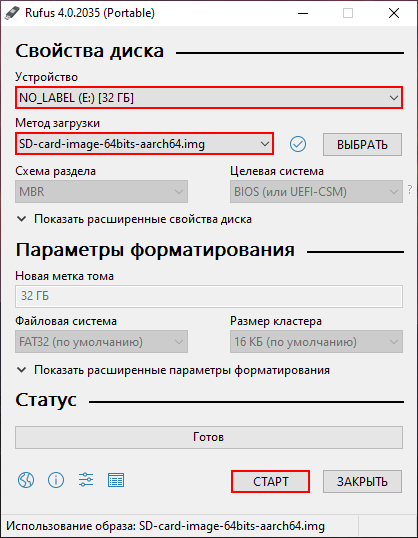
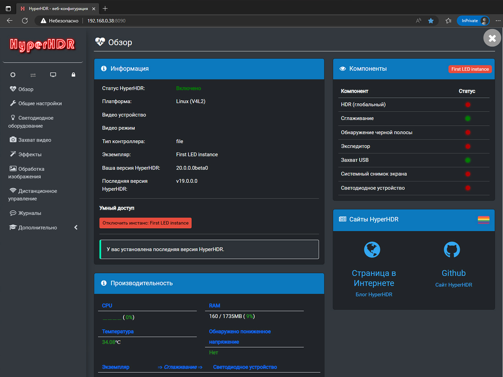

Открываем репозиторий разработчика HyperHDR, нам нужна страница релизных версий
(ссылка).
Скачиваем актуальный образ в зависимости от вашего оборудования.
Подробная инструкция по установке находится в разделе "Wiki" в том же репозитории
(ссылка).
В нем указано для какого устройства какой образ необходимо скачивать.
У меня в качестве хостинга выступает Raspberry Pi 4, соответственно мне необходимо использовать образ:
SD-card-image-64bits-aarch64.img.xz
Извлекаем файл *.img из загруженного архива с расширением *.xc
Подключаем к компьютеру карту памяти формата "MicroSD" (для Raspberry Pi 4 возможно использовать обычную карту памяти).
Скачиваем программу Rufus (ссылка) и запускаем ее.
В окне программы достаточно выполнить три действия:
- выбрать накопитель,
- указать путь до загруженного образа (файл *.img),
- нажать кнопку "Старт".

Дожидаемся окончания процесса записи образа системы на накопитель.
После завершения открываем в проводнике нашу карту памяти, переходим в папку "boot".
Далее для настройки Wi-Fi соединения необходимо скачать файлы из репозитория
(ссылка).
Размещаем скачанные файлы в открытой ранее папке "boot".
Открываем файл "wifi.nmconnection" в любом текстовом редакторе, редактируем следующие строки:
ssid = SSID-Wi-Fi
psk = Password-Wi-Fi
Отредактируйте его указав вместо "SSID-Wi-Fi" и "Password-Wi-Fi" название и пароль вашей домашней Wi-Fi сети.
Отключаем карту памяти и подключаем ее к Raspberry Pi. Открываем Web-интерфейс настройки вашего роутера и находим IP адрес присвоеный только что добавленному RPi. Подключаемся к панели настройки HyperHDR, для этого в браузере любого вашего устройства (телефон / планшет / компьютер) вводим в поле адресной строки IP адрес и после двоеточия прописываем порт 8090 (HTTP). Пример:
192.168.0.38:8090
Если мы наблюдаем окно настроек то мы все сделали верно.
